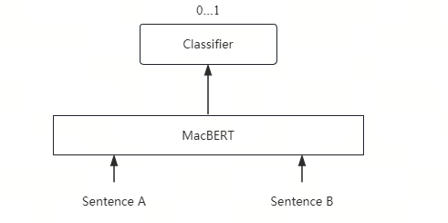
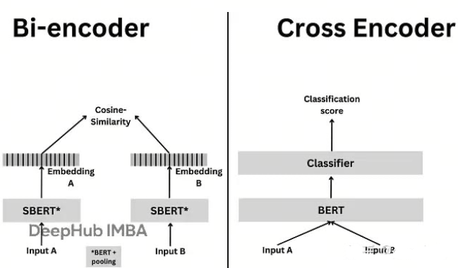
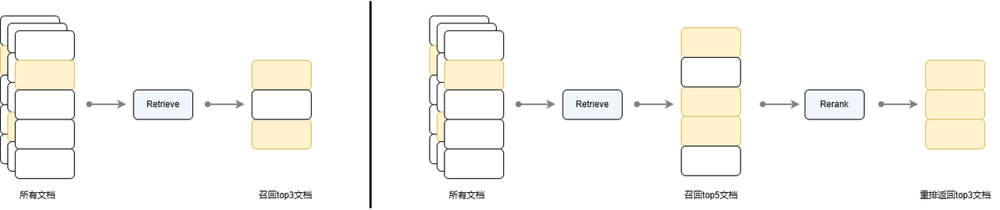
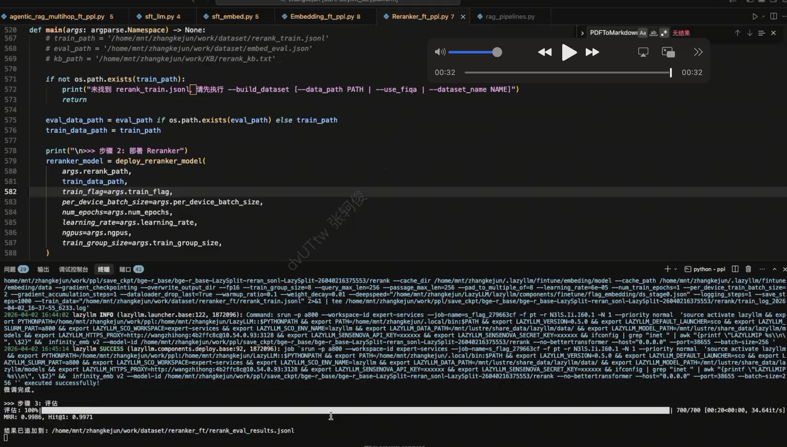
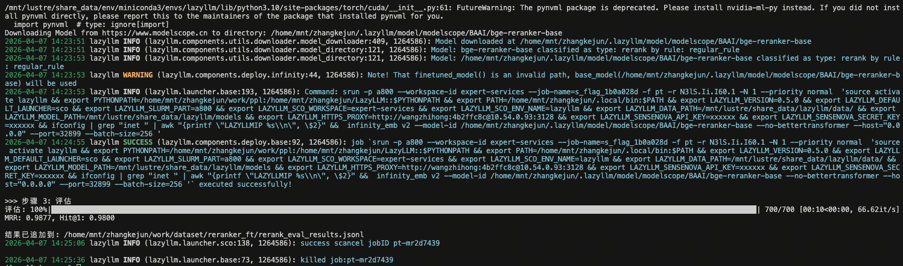

第27课时：Reranker 模型微调与实战¶
在 RAG（检索增强生成）系统中，Retriever 模型负责初筛（召回），
但初筛结果往往包含大量“似是而非”的干扰项——
例如，查询“心肌梗死的治疗”，检索返回“心肌炎治疗”“心力衰竭管理”“PCI手术流程”等。
✅ Reranker（重排序模型）正是解决这一问题的精排利器。
它能对初筛结果进行精细化相关性打分，将真正相关的文档排到最前面。
本课将从零基础原理出发，系统讲解：
- 核心原理：Cross-encoder 架构 vs Bi-encoder，相关性打分机制，计算开销分析；
- 数据构建：如何利用 LLM 蒸馏生成高质量排序数据，Pairwise 与 Listwise 格式的区别；
- 微调与实战：微调 BGE-Reranker，并集成到 RAG 系统。
用通俗语言 + 公式 + 工业界案例，让你掌握 Reranker 从理论到落地的完整能力。
1. Reranker 的核心原理：Cross-encoder 如何弥合语义鸿沟¶
1.1 Cross-encoder 的交互机制¶

Cross-encoder 通过将 Query 和 Document 拼接后联合输入 Transformer（如 MacBERT），利用其强大的自注意力机制实现深度语义交互，再通过 Classifier 输出相关性概率，从而在重排序任务中获得远超 Bi-encoder 的精度。
Reranker 采用 Cross-encoder 架构，其核心是将 Query 和 Document 拼接后联合输入 Transformer： $$ \text{input} = [\text{[CLS]} \, q \, \text{[SEP]} \, d \, \text{[SEP]}] $$
- \(q\)：用户输入的查询文本，例如 “心肌梗死的治疗”；
- \(d\)：从检索器（Retriever）返回的候选文档片段，例如 “阿司匹林不用于心肌炎”；
- [CLS]：特殊的分类 token（Classification token），位于序列开头，其最终隐藏状态常用于表示整个序列的语义；
- [SEP]：分隔符 token（Separator token），用于分隔查询和文档两个部分；
- \(\text{input}\)：拼接后的完整输入序列，作为 Transformer 的输入。
模型通过 全注意力机制（Full Self-Attention）建模所有 token 之间的交互关系。
✅ 关键能力：
- 注意力头可聚焦于“心肌梗死” vs “心肌炎”的差异词；
- 识别“不用于”是否定信号；
- 建立“阿司匹林 → 抗血小板 → 心梗治疗”的推理链。
1.2 相关性打分的数学形式¶
Cross-encoder 输出一个标量分数： $$ \text{score}(q, d) = W^\top h_{\text{[CLS]}} + b $$ 其中 \(h_{\text{[CLS]}}\) 是 [CLS] token 的最终隐藏状态，\(W, b\) 为可学习参数。
- \(h_{\text{[CLS]}} \in \mathbb{R}^h\)：Transformer 编码器输出的 [CLS] token 的隐藏向量，维度为 \(h\)（例如 \(h = 768\)）；
- \(W \in \mathbb{R}^h\)：可学习的权重向量，用于将隐藏状态投影为标量；
- \(b \in \mathbb{R}\)：可学习的偏置项；
- \(\text{score}(q, d) \in \mathbb{R}\)：标量分数，表示查询 \(q\) 与文档 \(d\) 的相关性程度，值越大表示越相关。
📌 训练目标：让相关文档得分显著高于不相关文档： $$ \text{score}(q, d^+) - \text{score}(q, d^-) > \text{margin} $$
1.3 回顾：Bi-encoder 架构及其局限性¶
在 Embedding 检索阶段，我们通常采用 Bi-encoder（双编码器）架构。其核心思想是将查询（Query）\(q\) 与候选文档（Document）\(d\) 独立编码为稠密向量，再通过向量相似度衡量相关性：
- Query Encoder：\(u = E_q(q)\)，将查询 \(q\) 映射为向量 \(u \in \mathbb{R}^d\)；
- Document Encoder：\(v = E_d(d)\)，将文档 \(d\) 映射为向量 \(v \in \mathbb{R}^d\)；
- 相似度计算：使用余弦相似度： $$ \text{sim}(q, d) = \frac{u^\top v}{|u| |v|} $$
✅ 优势：
- 文档向量 \(v\) 可离线预计算，检索效率极高；
- 支持亿级知识库的近似最近邻搜索（ANN）。❌ 根本局限：
- 无交互机制：\(q\) 与 \(d\) 的编码过程完全独立，无法建模细粒度语义对齐；
- 无法识别否定、术语差异、逻辑依赖：
- 例：查询“心梗治疗” 与 文档“心肌炎治疗”
→ 因共享“心肌”“治疗”等词，Bi-encoder 给出高相似度，但任务上完全无关。
因此，Bi-encoder 适合高召回（Recall），但排序精度（Ranking Precision）不足。
1.4 为什么 Cross-encoder 更有效？——信息论视角¶

从上图可以看到： Bi-encoder 是“有损压缩”：独立编码相当于把 Query 和 Doc 分别压缩成低维向量，再通过简单相似度比较。这个过程丢失了大量交互信息 → 信息通道容量小 → 无法恢复完整语义对齐 → 估计误差大。 Cross-encoder 是“无损通道”： 联合编码允许模型在原始文本层面进行充分交互，保留了所有潜在判别信号 → 信息通道容量大 → 能更准确逼近真实相关性 → 估计更准。
设真实相关性为 \(r^* \in \{0, 1\}\)，模型估计为 \(\hat{r} = \sigma(\text{score}(q, d))\)。
-
Bi-encoder 的信息瓶颈：
Query 和 Doc 独立编码 → 信息通道受限 → 无法恢复细粒度语义对齐。 -
Cross-encoder 的信息通道：
联合编码 → 全连接注意力 → 信息通道容量大 → 能保留更多判别性特征。
从互信息角度看：
其中：
- \(I(r^*; \text{score}_{\text{cross}})\)：Cross-encoder 打分与真实标签的互信息；
- \(I(r^*; \text{sim}_{\text{bi}})\)：Bi-encoder 相似度与真实标签的互信息；
- 符号 \(\gg\) 表示“远大于”。 即：Cross-encoder 的输出与真实相关性具有更高的互信息。
✅ 实证结果（BEIR benchmark）：
- Bi-encoder（BGE-large）：MRR@10 ≈ 0.62
- Cross-encoder（BGE-reranker）：MRR@10 ≈ 0.85（+37%）
2. Reranker 在 RAG 流程中的作用：精排而非召回¶
Reranker 召回重排策略被广泛应用在搜索引擎、推荐系统、问答系统等任务中，其基本思想是：在初步检索后，通过一个额外的模型对检索结果进行再次排序以提高最终的效果。下图对比了直接使用检索器召回 top 3 文档和先通过检索器召回 top 5 文档再对其进行重排序返回 top 3 文档的流程。可见检索流程并没有对文档进行排序，只是将满足需求的 top 5 个文档返回，而通过重排序流程，可以对其进行更精细的排序，得到排序后的文档，使得更重要的文档在返回列表中更靠前。

2.1 两阶段流程¶
-
召回阶段（Recall）：
- Bi-encoder 检索 top-100 文档；
- 目标：高召回率（Recall@100 > 90%）；
- 优势：高效（Doc 向量可预计算）。
-
精排阶段（Rerank）：
- Cross-encoder 对 top-100 重排序；
- 目标：高精度排序（MRR@10 最大化）；
- 输出：取 top-5 送入 LLM 生成。
📌 分工明确：
- Bi-encoder 负责“广撒网”；
- Reranker 负责“精挑细选”。
2.2 计算开销与性能权衡¶
| 模块 | 时间复杂度 | 显存 | 适用阶段 |
|---|---|---|---|
| Bi-encoder | \(O(1)\)（Doc 预计算） | 低 | 召回 |
| Cross-encoder | \(O(k \cdot L^2)\) | 高 | 精排（\(k \leq 100\)） |
✅ 工业实践：
- 限制 \(k=50\)～100，平衡精度与延迟；
- 使用小模型（如
bge-reranker-base）或 ONNX 加速；- 仅对高价值请求启用 Reranker。
2.3 业界经典 Reranker 微调数据集¶
| 数据集 | 领域 | 规模 | 特点 | Schema |
|---|---|---|---|---|
| MS MARCO | 通用搜索 | 500k query-doc pairs | Bing 搜索日志，人工标注相关性 | {"query": str, "positive": str, "negatives": List[str]} |
| MIRACL | 多语言 | 18 语言 × 12 领域 | 跨语言检索，含医疗、科技等 | {"query": str, "positive_passages": List[str], "language": str} |
| C-Eval（中文） | 多领域 | 14k | 包含医学、法律、金融等子集，适合构建中文 Reranker | {"question": str, "answer": str, "distractors": List[str]} |
| FiQA | 金融 | 6k | 金融问答，负样本多为“看似专业但错误”的干扰项 | {"question": str, "relevant": str, "irrelevant": List[str]} |
| LLM-Reranker-Distill（BGE） | 通用 | 1M+ | 用 GPT-4 蒸馏生成，覆盖 100+ 子任务 | {"query": str, "pos": str, "neg": str} |
🌟 关键特点：
- MS MARCO：最广泛使用的英文 Reranker 基准，负样本通过 BM25 + Hard Negative Mining 构建；
- C-Eval（中文）：含 52 个学科，
distractors字段天然提供难负样本；- LLM-Reranker-Distill：由 BGE 团队开源，使用 LLM 自动生成高质量 Pairwise 数据，是当前 SOTA 微调数据源。
3. Reranker 数据集构建¶
Reranker 的训练数据需要包含查询、正样本文档和负样本文档。FlagEmbedding Reranker 的标准数据格式为：
📌 关键参数：
train_group_size决定每个训练批次的样本组成，默认为 8（1个正样本 + 7个负样本），因此neg列表通常包含 7 个负样本。
3.1 从公开数据集构建（推荐入门）¶
以下代码展示如何从 HuggingFace 数据集构建 Reranker 训练数据：
import json
import numpy as np
from tqdm import tqdm
from datasets import load_dataset
def build_rerank_dataset_from_huggingface(
dataset_name: str = "virattt/financial-qa-10K",
neg_num: int = 7, # 负样本数量（配合 train_group_size=8）
test_size: float = 0.1,
seed: int = 1314
):
"""从 HuggingFace 数据集构建 Reranker 训练数据"""
# 1. 加载数据集
ds = load_dataset(dataset_name, split="train")
ds = ds.select_columns(column_names=["question", "context"])
ds = ds.rename_columns({"question": "query", "context": "pos"})
# 2. 转换 pos 为列表格式（FlagEmbedding 要求）
def str_to_lst(data):
data["pos"] = [data["pos"]]
return data
ds = ds.map(str_to_lst)
# 3. 划分训练集和测试集
split = ds.train_test_split(test_size=test_size, shuffle=True, seed=seed)
# 4. 构建负样本池（从训练集的其他样本中采样）
train_corpus_list = [item[0] for item in split["train"]["pos"]]
# 5. 为每个样本生成负样本
np.random.seed(seed)
train_data = []
for item in tqdm(split["train"], desc="生成负样本"):
# 随机采样负样本
neg_indices = np.random.randint(0, len(train_corpus_list), size=neg_num * 2)
neg = [train_corpus_list[idx] for idx in neg_indices]
# 确保负样本不包含正样本
pos_text = item["pos"][0]
neg = [n for n in neg if n != pos_text][:neg_num]
# 构造 Reranker 数据格式
train_data.append({
"query": item["query"],
"pos": item["pos"], # List[str]
"neg": neg # List[str]
})
# 6. 保存为 JSONL 格式
with open("rerank_train.jsonl", "w", encoding="utf-8") as f:
for item in train_data:
f.write(json.dumps(item, ensure_ascii=False) + "\n")
print(f"成功生成 {len(train_data)} 条 Reranker 训练样本")
return "rerank_train.jsonl"
3.2 利用 LLM 蒸馏生成数据（进阶方法）¶
当需要更高质量的训练数据时，可采用 LLM 蒸馏方法生成难负样本（Hard Negatives）：
3.2.1 流程¶
- 从知识库中采样文档 \(d\)；
- 用 LLM 生成相关查询 \(q\)；
- 对每个 \(q\)，用 Embedding 检索 top-\(n\) 候选文档；
- 用 LLM 判断每个候选的相关性，区分正负样本。
3.2.2 代码示例¶
import json
import lazyllm
# Step 1: 初始化检索组件
embed = lazyllm.TrainableModule('BAAI/bge-large-zh-v1.5')
documents = lazyllm.Document(dataset_path="KB", embed=embed, manager=False)
retriever = lazyllm.Retriever(
doc=documents, group_name="CoarseChunk",
similarity="bm25_chinese", topk=10
)
# Step 2: 部署 LLM（用于蒸馏）
llm = lazyllm.OnlineChatModule(source="sensenova", model="SenseChat-5-1202")
# Step 3: 蒸馏生成训练数据
rerank_samples = []
neg_num = 7 # 负样本数量
for d in documents[:1000]: # 采样文档
# 3.1 生成查询
prompt_q = f"请基于以下文档生成一个用户可能提出的问题：\n文档：{d}\n问题："
query = llm(prompt_q).strip()
# 3.2 检索候选文档
candidates = retriever(query)
# 3.3 用 LLM 判断相关性
positives, negatives = [], []
for cand in candidates:
prompt_judge = (
f"问题：{query}\n文档：{cand}\n"
"该文档是否直接回答了问题？请仅回答"是"或"否"。"
)
if llm(prompt_judge).strip() == "是":
positives.append(cand)
else:
negatives.append(cand)
# 3.4 构造训练样本（FlagEmbedding 格式）
if positives and len(negatives) >= neg_num:
rerank_samples.append({
"query": query,
"pos": positives[:1], # 取第一个正样本
"neg": negatives[:neg_num] # 取前 neg_num 个难负样本
})
# Step 4: 保存为 JSONL 格式
with open("rerank_distill.jsonl", "w", encoding="utf-8") as f:
for sample in rerank_samples:
f.write(json.dumps(sample, ensure_ascii=False) + "\n")
print(f"成功生成 {len(rerank_samples)} 条 Reranker 训练样本")
✅ LLM 蒸馏的优势：
- 自动生成海量高质量样本；
- LLM 能理解复杂语义，标注准确率 >90%；
- 生成的负样本是难负样本（检索返回但不相关），训练效果更好。
🌟 业界案例：
- Cohere：用 GPT-4 蒸馏生成 reranker 训练数据；
- BGE 团队：开源
BAAI/LLM-Reranker-Distill数据集。
3.3 Pairwise vs Listwise 数据格式¶
3.3.1 Pairwise（成对比较）¶
- 格式：\((q, d^+, d^-)\)，表示 \(d^+\) 比 \(d^-\) 更相关；
- 损失函数：Pairwise Hinge Loss $$ \mathcal{L} = \max(0, \text{margin} - [\text{score}(q, d^+) - \text{score}(q, d^-)]) $$
- 优点：标注简单，训练稳定。
3.3.2 Listwise（列表级排序）¶
- 格式：\((q, [d_1, ..., d_n], [r_1, ..., r_n])\)，\(r_i\) 为相关性等级；
- 损失函数：ListNet
- 真实分布：\(P_{\text{true}}(d_i) = \frac{2^{r_i} - 1}{\sum_j (2^{r_j} - 1)}\)
- 模型分布：\(P_{\text{model}}(d_i) = \frac{\exp(\text{score}(q, d_i))}{\sum_j \exp(\text{score}(q, d_j))}\)
- 损失 = 交叉熵：\(\mathcal{L} = -\sum_i P_{\text{true}}(d_i) \log P_{\text{model}}(d_i)\)
- 优点：建模全局排序，效果更好。
| 方法 | 适用场景 | 典型算法 | 局限性 |
|---|---|---|---|
| Pairwise | 需要明确相对顺序的场景（如搜索） | RankNet、BPR、FM Pairwise | 对标注噪声敏感，无法直接优化 NDCG 等全局指标 |
| Listwise | 全局优化排序（如推荐列表、问答精排） | LambdaMART、ListNet、AdaRank | 计算复杂度高，依赖完整候选列表数据 |
3.4 基于 LazyLLM 构建数据集¶
除了 Embedding 模型，LazyLLM 还提供了专用于构建高质量 Reranker（重排序）模型 微调数据集的 Pipeline。Reranker 模型的效果高度依赖于难负样本（Hard Negatives）的质量，该工具链旨在简化数据预处理流程，用户仅需使用简单的代码，即可自动化构建出效果优秀的训练数据集。
Pipeline 内置了三个关键处理阶段的算子，覆盖从数据划分到格式转换的全流程：
| 算子名称 | 功能描述 | 支持模式/特性 |
|---|---|---|
| RerankerTrainTestSplitter (数据集切分) |
对输入数据进行随机打乱，并按指定比例分割为训练集和测试集。 | • 支持自定义分割比例 • 确保评估数据的独立性 |
| embedding_hard_negative_miner (难负样本挖掘) |
挖掘高难度负样本，提升 Reranker 模型对相似文本的区分能力。 | • BM25：基于关键词匹配 • 语义相似度：基于向量距离 • 混合方式：结合上述两种途径 |
| reranker_data_formatter (数据格式化) |
将处理后的数据转换为主流 Reranker 框架所需的训练格式。 | • FlagReranker 格式 • CrossEncoder 格式 • Pairwise 格式 |
下面我们简单展示一下如何使用 reranker_pipelines 完成：划分 → 难负样本挖掘 → 格式化 → 保存。完整代码(reranker_ppl)
def build_dataset_with_pipelines(
raw_items: List[dict],
corpus_texts: Optional[List[str]] = None,
neg_num: int = 7,
test_size: float = 0.1,
seed: int = 1314,
mining_strategy: str = "random",
output_format: str = "flagreranker",
train_group_size: int = 8,
embedding_serving=None,
bm25_ratio: float = 0.5,
output_subdir: str = "dataset",
) -> Tuple[str, str, str]:
if not raw_items:
raise ValueError("raw_items 为空，请先通过 load_from_fiqa / load_from_user_data / load_from_huggingface 加载")
if corpus_texts is None:
corpus_texts = list({p for item in raw_items for p in (item.get("pos") or [])})
print("\n" + "=" * 60)
print("Reranker Pipeline: 划分 → 难负样本 → 格式化 → 保存")
print("=" * 60)
print(f"\n>>> 输入: {len(raw_items)} 条，语料 {len(corpus_texts)} 篇")
# ----- Step 1: 划分 train / test -----
print("\n>>> Step 1: 划分 train / test (RerankerTrainTestSplitter)")
splitter = RerankerTrainTestSplitter(test_size=test_size, seed=seed)
mixed = splitter(raw_items)
train_items = [x for x in mixed if x.get("split") == "train"]
test_items = [x for x in mixed if x.get("split") == "test"]
print(f"训练 {len(train_items)} 条，测试 {len(test_items)} 条")
# ----- Step 3: 难负样本挖掘 -----
print(f"\n>>> Step 2: 难负样本挖掘 (策略: {mining_strategy})")
test_corpus = list(set(item["pos"][0] for item in test_items if item.get("pos")))
use_corpus = corpus_texts
hard_neg_fn = build_reranker_hard_neg_pipeline(
input_query_key="query",
input_pos_key="pos",
output_neg_key="neg",
corpus=use_corpus,
mining_strategy=mining_strategy,
num_negatives=neg_num,
embedding_serving=embedding_serving,
bm25_ratio=bm25_ratio,
seed=seed,
)
train_items_with_neg = hard_neg_fn(train_items)
print(f"难负样本挖掘完成: {len(train_items_with_neg)} 条")
print(f"\n>>> Step 3: 数据格式化 (格式: {output_format})")
def _flatten_and_write(formatter_result: List, out_path: str) -> int:
flat = []
for x in formatter_result:
if isinstance(x, list):
flat.extend(x)
else:
flat.append(x)
Path(out_path).parent.mkdir(parents=True, exist_ok=True)
with open(out_path, "w", encoding="utf-8") as f:
for item in flat:
if isinstance(item, dict) and item:
f.write(json.dumps(item, ensure_ascii=False) + "\n")
return len(flat)
formatter_ppl = build_reranker_dataformatter_pipeline(
input_query_key="query",
input_pos_key="pos",
input_neg_key="neg",
output_format=output_format,
train_group_size=train_group_size,
)
train_data_path = build_data_path(output_subdir, "rerank_train.jsonl")
formatted_train = formatter_ppl(train_items_with_neg)
n_train = _flatten_and_write(formatted_train, train_data_path)
print(f"训练数据: {n_train} 条 → {train_data_path}")
import random
random.seed(seed)
eval_data_path = build_data_path(output_subdir, "rerank_eval.jsonl")
with open(eval_data_path, "w", encoding="utf-8") as f:
for item in test_items:
pos_set = set(item.get("pos", []))
candidates = [doc for doc in test_corpus if doc not in pos_set]
neg = random.sample(candidates, min(neg_num, len(candidates))) if candidates else []
f.write(json.dumps({
"query": item.get("query", ""),
"corpus": item.get("pos", []),
"neg": neg,
}, ensure_ascii=False) + "\n")
print(f"评估数据: {len(test_items)} 条 → {eval_data_path}")
kb_path = build_data_path("KB", "rerank_kb.txt")
with open(kb_path, "w", encoding="utf-8") as f:
f.write("\n".join(test_corpus))
print(f"知识库: {len(test_corpus)} 篇 → {kb_path}")
print("\n数据集构建完成！")
return train_data_path, eval_data_path, os.path.dirname(kb_path)
4. 微调与实战：微调 BGE-Reranker¶
LazyLLM 提供了 Reranker 组件进行重排序，分别提供了在线和离线两种重排序模型的调用途径，其中在线模型通过 OnlineEmbeddingModule(type="rerank") 进行调用，离线重排模型则仍然通过 TrainableModule 进行调用。
4.1 Reranker 组件参数详解¶
使用 Reranker 时的可调整参数包括：
| 参数 | 类型 | 默认值 | 说明 |
|---|---|---|---|
| name | str | 'ModuleReranker' |
实现重排序时必须为 ModuleReranker |
| model | Union[Callable, str] | - | 实现重排序的具体模型名称或可调用对象 |
| topk | int | - | 最终需要返回的 k 个节点数 |
| output_format | str | None |
输出格式，可选值有 'content' 和 'dict' |
| join | boolean | False |
是否联合输出的 k 个节点（仅当 output_format='content' 时有效） |
model 参数的两种使用方式：¶
- Callable 情形：
OnlineEmbeddingModule(type="rerank")：目前支持 qwen 和 glm 的在线重排序模型，使用前需要指定 apikey-
TrainableModule(model="str")：需要传入本地模型名称，常用的开源重排序模型为 bge-reranker 系列 -
str 情形：直接传入模型名称，与 Callable 情形中
TrainableModule对应的 model 参数要求相同
output_format 参数说明：¶
None或省略：返回原始格式（通常是元组列表[(index, score), ...]）'content'：返回字符串格式，当join=True时输出一个长字符串，join=False时输出字符串列表'dict'：返回字典格式，包含文档内容和得分信息
4.2 微调前的准备工作¶
在开始微调前，需要完成以下准备工作：
4.2.1 数据准备¶
Reranker 微调需要的数据格式为 FlagEmbedding 标准格式：
通常建议 neg 列表包含 7 个负样本，以配合默认的 train_group_size=8（1个正样本 + 7个负样本）。
4.2.2 环境配置¶
确保已安装 LazyLLM 框架及相关依赖：
4.2.3 选择预训练模型¶
常用的开源 Reranker 模型包括：
| 模型名称 | 参数量 | 语言 | 特点 |
|---|---|---|---|
BAAI/bge-reranker-base |
110M | 中英双语 | 平衡性能与速度，推荐首选 |
BAAI/bge-reranker-large |
340M | 中英双语 | 更高精度，计算开销更大 |
BAAI/bge-reranker-v2-m3 |
110M | 多语言 | 支持 100+ 语言，跨语言检索 |
4.3 微调参数详解¶
微调 Reranker 时，以下参数对最终效果影响显著：
| 参数 | 推荐值 | 说明 |
|---|---|---|
| per_device_train_batch_size | 2-8 | 每个 GPU 的批次大小，取决于 GPU 显存 |
| num_train_epochs | 1-3 | 训练轮数，通常 1-2 轮即可收敛 |
| learning_rate | 2e-5 ~ 1e-4 | 学习率，推荐从 5e-5 开始尝试 |
| train_group_size | 8 | 训练组大小（1正 + 7负），与数据格式对应 |
| query_max_len | 256 | 查询最大长度，超过部分截断 |
| passage_max_len | 256 | 文档最大长度，超过部分截断 |
| ngpus | 1~8 | 使用的 GPU 数量，加速训练 |
📌 关键参数说明：
train_group_size：决定了每个训练批次的样本构成。例如
train_group_size=8表示每个训练批次包含 1 个正样本和 7 个负样本，这与数据集中neg列表的长度（通常为 7）相匹配。query_max_len 和 passage_max_len：Cross-encoder 需要将查询和文档拼接后输入模型，因此需要限制两者长度以控制总序列长度。通常设置 256+256=512，不超过模型的最大上下文长度（如 BERT 的 512）。
4.4 完整微调示例¶
下面我们展示一个完整的 BGE-Reranker 微调流程，包含数据准备、模型微调、效果评估三个步骤。
步骤 1：数据准备（以 FiQA 金融问答数据集为例）¶
import lazyllm
from lazyllm.tools.dataset import build_rerank_dataset_from_fiqa
# 构建 Reranker 训练数据
train_data_path, eval_data_path, kb_path = build_rerank_dataset_from_fiqa(
queries_file="dataset/fiqa/queries.jsonl",
corpus_file="dataset/fiqa/corpus.jsonl",
train_file="dataset/fiqa/train.tsv",
neg_num=7, # 负样本数量（配合 train_group_size=8）
test_size=0.1, # 10% 作为测试集
seed=1314
)
print(f"训练数据: {train_data_path}")
print(f"评估数据: {eval_data_path}")
print(f"知识库路径: {kb_path}")
步骤 2：配置并启动微调¶
import lazyllm
from lazyllm import finetune, launchers
# 微调参数配置
rerank_path = "BAAI/bge-reranker-base" # 预训练模型
per_device_batch_size = 4 # 每个 GPU 批次大小
num_epochs = 2 # 训练轮数
learning_rate = 5e-5 # 学习率
ngpus = 1 # GPU 数量
train_group_size = 8 # 训练组大小
print(f"{'='*60}")
print(f"开始微调 Reranker 模型: {rerank_path}")
print(f"{'='*60}")
# 创建可微调的 Reranker 模型
reranker_model = lazyllm.TrainableModule(rerank_path) \
.mode('finetune') \
.trainset(train_data_path) \
.finetune_method((
finetune.auto,
{
'launcher': launchers.sco(ngpus=ngpus),
'per_device_train_batch_size': per_device_batch_size,
'num_train_epochs': num_epochs,
'learning_rate': learning_rate,
'train_group_size': train_group_size,
'query_max_len': 256,
'passage_max_len': 256,
# 可选：添加权重衰减和梯度累积
'weight_decay': 0.01,
'gradient_accumulation_steps': 2,
}
))
# 启动微调
print("\n开始微调 Reranker 模型...")
reranker_model.update() # 执行微调
print("微调完成！")
📚 完整代码参考：reranker_finetune.py 提供了从数据准备到评估的完整可运行代码。
5. 业界广泛使用的技术与模型¶
| 组件 | 主流方案 |
|---|---|
| 开源模型 | BGE-Reranker, ColBERTv2 |
| 商用 API | Cohere Rerank, Pinecone Rerank |
| 微调框架 | FlagEmbedding, Sentence-Transformers |
| RAG 集成 | LazyLLM，LlamaIndex, Haystack, LangChain |
6. 效果评测¶
Reranker 在检索增强生成（RAG）流程中扮演关键角色：它接收初步检索的候选文档（包括正样本和负样本），通过更精细的语义匹配对结果重新排序，从而提升最终输入给大模型的上下文质量。
为此，我们设计了基于 MRR（Mean Reciprocal Rank） 和 Hit Rate（命中率） 的评估方案，以衡量 Reranker 对正样本的排序优先级能力。
6.1 评估指标定义与公式¶
1. MRR（Mean Reciprocal Rank，平均倒数排名）¶
定义：MRR 衡量在所有查询中，第一个相关（正样本）文档的排名倒数的平均值。该指标对高排名的正样本赋予更高权重，特别适用于“找到一个正确答案即可”的场景（如问答系统）。
计算公式：
设共有 \( N \) 个查询样本，对于第 \( i \) 个查询，其第一个正样本在 Reranker 输出中的排名为 \( \text{rank}_i \)（从 1 开始计数），则 MRR 定义为：
若某查询未返回任何正样本，则 \( \frac{1}{\text{rank}_i} = 0 \)。
特点：MRR 对排名敏感——正样本排在第 1 位得分为 1.0，第 2 位为 0.5，第 3 位为 0.333，依此类推。因此，MRR 越高，说明 Reranker 越能将相关文档排在前列。
2. Hit Rate（命中率，@Top-K）¶
定义：在 Top-K 检索结果中，至少包含一个正样本的比例。反映系统在有限展示位（如 Top-1）下“是否命中正确答案”的能力。
计算公式：
设 \( \mathbb{I}_i \) 为指示函数，当第 \( i \) 个查询的 Top-K 结果中包含至少一个正样本时取值为 1，否则为 0，则 Hit Rate 为：
在本实现中，默认使用 topk=1，即计算 Hit@1，等价于“首条结果是否为正样本”。
应用场景：在金融问答等高精度场景中，通常仅使用 Top-1 文档作为上下文，因此 Hit@1 是核心业务指标。
6.2 评估流程说明¶
函数 evaluate_reranker_direct 执行以下步骤：
- 加载评估数据：从
eval_data_path读取每条样本，包含：query：用户问题；corpus：正样本文档列表（通常为单元素列表）；neg：负样本文档列表（由build_dataset_corpus随机采样生成）。
- 构建候选集：将正样本与负样本合并为
all_docs，作为 Reranker 的输入文档池。 - 调用 Reranker：
- 输入
query与all_docs； - 获取按相关性降序排列的
(index, score)列表，其中index对应all_docs中的位置。
- 输入
- 计算指标：
- 遍历排序结果，找到第一个正样本（即
index < len(pos_docs)）； - 记录其排名
rank，累加1/rank到 MRR； - 若
rank <= topk，则命中计数 +1。
- 遍历排序结果，找到第一个正样本（即
- 归一化输出：返回平均 MRR 与 Hit Rate。
关键假设：正样本在
all_docs中位于前len(pos_docs)位置（代码中pos_docs + neg_docs保证此顺序）。
6.3 输出结果¶


| 评估指标 | LazyLLM 数据构建 (推荐) | 常规数据构建 (基准) | ||
|---|---|---|---|---|
| 微调前 | 微调后 | 微调前 | 微调后 | |
| MRR | 98.96 | 99.86 | 95.55 | 97.19 |
| Hit@1 | 98.14 | 99.71 | 92.36 | 94.90 |
| ``` | ||||
| --- |
7. 总结：Reranker 的核心原理链¶
| 问题 | 解决方案 | 原理 |
|---|---|---|
| Bi-encoder 无法建模细粒度交互 | 使用 Cross-encoder | 联合编码 + 全注意力 |
| 语义相似 ≠ 任务相关 | 引入相关性监督信号 | Pairwise / Listwise 损失 |
| 初筛结果噪声大 | 两阶段检索 | 召回 + 精排 |